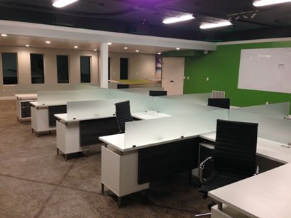

Hi! I'm Brad Green
Relevant facts about me:
- Born: March 3, 1980 BCE
- Hometown: Cedar City, Utah,
same home town as Jerry Matthers -The Beaver
- Married with 4 kids and a beautiful wife
- Bachelor's Degree from SUU in IT/Networking, foreign languages emphasis
- Job History (from recent to ancient):
- The best Sales Manager for a plumbing wholesaler
- Businessman, Hedge fund manager, Real estate investor, Hard-money lender
- Client liaison for a venture capital firm
- Network Administrator for Paiute Indian Tribe
My interests are varied, but computers have been my passionate hobby since we were first
introduced circa 1987 playing Conan the Barbarian on my best friend's Atari? in black and orange.
When my dad started his business in 1989, he bought a brand-new Compaq Desktop PC with a 286 processor.
I went to work trying to figure out what I could do with it (to it). After breaking it 3-4 times and my
dad paying the local computer repair guy, Roger, to fix it, I knew how to fix it myself when it was broken.
In 1997, while fixing my girlfriend's parent's computer, Roger offered me a job as a computer tech, and I
jumped at the chance.
Other Hobbies and Interests:
- Philosophy
- Theology
- Economic Theory
- History
- Political Theory (libertarian, laissez-faire capitalism, believe that contract enforcement and law enforcement are crucial)
- Travelling by airplane and cruise ship
- Camping and spending time in the peaceful outdoors
- Scuba Diving
- Movies
- Self-reliance
- Education, specifically gaining and teaching life-knowledge
Something interesting that few people know about me:
I was shot three times while in
Rio, while serving a mission for the
Church of Jesus Christ of Latter-Day Saints.
Two 9mm bullets fired from a
Tech-9
pierced my chest (from the left side), and one bullet hit my left arm and broke the bone. My body stopped all three.
Both lungs, my stomach, intestines, liver, diaphragm, radius bone, and a rib were damaged by the bullets.
Aside from pain in the lungs when exerting myself physically, there has been no long-term side-effects for me.
The story was on the
news
and people in my hometown differentiate me from my brothers by the fact that I'm the famous Green boy.

Why I am here:
Due to growth in our web-based business, my family's company has realized they have to put more priority on that part of our business.
As such, I have been asked to
sharpen the saw and learn more about web programming so I can be more useful in our
ever-growing IT/Web department.
The company has built a new high-tech office we call the Dev Den to recruit and maintain
talented developers. I'm excited to be joining this team and working in this office. Can you see the hammock in the back-corner?
There is now a TV on the ceiling that is setup with Intel WiDi so you can transfer your station to the hammock station and code from there.
Oh Yeah!
My last name may be Green, but my favorite color is blue.